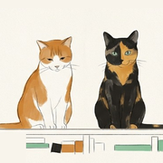

精選三大去背插圖 × 雙貓品牌圖標校驗展廳
依照指示：網頁僅保留讀者選定之 3 張純淨去背插圖 · 依照第 4 張重新裁切去除文字打造 Apple Touch Icon
Apple Touch Icon (180x180 Retina)

依照片 4 雙貓書架伴讀精準 1:1 裁切，零多餘文字
導覽列 Brand Icon (38x38)
頂部導覽列高清晰度圖標

【選定圖 1 · 側伸腿放鬆貓】
• 去背與去字：抹除上方所有文字標籤，外部背景 100% 透明化
• 網頁最佳位置：左側固定守護底圖。呼應「【軌道一 · 生理放鬆】呼吸下沉，停止凍結」的心法意象，向橘白貓學習瓦解防禦、舒展後腿。
• 網頁最佳位置：左側固定守護底圖。呼應「【軌道一 · 生理放鬆】呼吸下沉，停止凍結」的心法意象，向橘白貓學習瓦解防禦、舒展後腿。

【選定圖 2 · 端坐編織提籃旁玳瑁貓】
• 去背、去字與線條修復：抹除天花板垂下的多餘孤立長細線，保留提籃上方小毛球與端坐自持身形；四周留足 12px 安全緩衝，比例由原本瘦高拉長優化為 1:1.12 端莊比例。
• 網頁最佳位置：右側固定守護底圖（已調高 bottom 至 42px，徹底解決原先在右下角被壓太低、看起來被截斷的問題）。
• 網頁最佳位置：右側固定守護底圖（已調高 bottom 至 42px，徹底解決原先在右下角被壓太低、看起來被截斷的問題）。

【選定圖 3 · 升降桌全然臣服手繪畫片 (不去背)】
• 工藝重塑（不去背更優美）：依指示完整保留手繪溫潤和紙底色、升降桌水平切線與底部微型排版文字，還原貓咪後背貼合桌面的真實物理依託感。
• 網頁最佳位置：正文末尾獨立「晚安充電儀式」單元（移出黑底 Footer，改在專屬溫潤淺米色區塊展開，徹底化解黑底反差，作為全篇情感閉幕）。
• 網頁最佳位置：正文末尾獨立「晚安充電儀式」單元（移出黑底 Footer，改在專屬溫潤淺米色區塊展開，徹底化解黑底反差，作為全篇情感閉幕）。